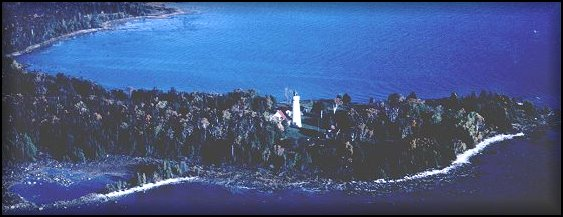

About the Seul Choix Pointe Lighthouse
Gulliver Historical Society
672N West Gulliver Lk. Rd., Gulliver, MI 49840
906-283-3183
Make a visit to Seul Choix Point Lighthouse your "Only Choice"
Hundreds of years ago, Native Americans and French fur traders traveled in canoes across the rough waters of Lake Michigan. On one occasion, a group of French sailors were caught in a terrifying storm, which forced them to seek shelter. They landed on the rocky peninsula and found refuge in the bay. Before leaving, they named the area Seul Choix, which translates to Only Choice.
In the early 1800s, fishing settlements quickly sprang up when the discovery of an abundance of whitefish and lake trout were found in the surrounding waters. Logging companies and railways were built to support a growing population. In 1930, a great limestone quarry and harbor was built on the Seul Choix Bay, known as Port Inland. Today, commercial and recreational fishermen, shipping industries and recreational boaters use the established light house, built in 1892-1895, as a navigational aid.
Lighthouse Complex
On September 5, 1895, the entire complex was complete. The project consisted of a tower, family quarters, a steam fog signal and boiler house, stable, boathouse, two docks, two oil houses, brick outhouse, paint shed and a tramway, which was used to transport supplies from the boats up the slope to the light.
The white tower stood seventy-nine feet, nine inches tall. Since the light had to be lit manually, a light keeper was needed to constantly check the light. The ten-sided cast iron lantern room held a Third Order Fresnel lens, made by LaPaute of Paris. The keeper's house was a two-story brick building with bowed ends and a gabled roof. In 1925, an additional living quarters was added on to the rear of the house and displays solid copper moldings.
The Seul Choix Point Lighthouse has represented peacefulness and a place of refuge during the changing times. The Native Americans and fur traders sought safety in the harbor while fishermen and loggers depended on its resources for their livelihood. Sailors relied on the peace of mind brought by the light and fog signal. Today, the trashing and shipping industries need the light as a navigational aid. The lighthouse - still fully operational - symbolizes the roots of many area families. Through the renovation and preservation of the Point, the value of history will be shared with all those who visit the memorable Seul Choix Point.